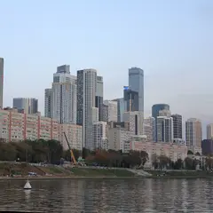
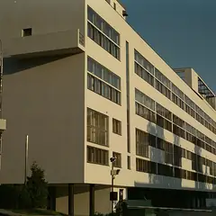
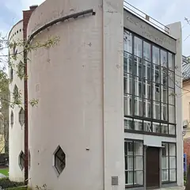
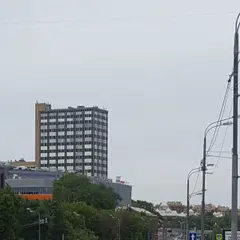
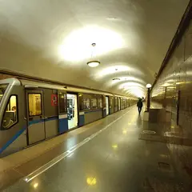

Подборка редакции · Москва
Места из ленты
Те самые кадры, под которыми спрашивают «где это?»: Сити с Шелепихинской набережной, дом-кольцо в Раменках, стеклянный цилиндр клуба Зуева, терем Перцовой. Почти всё бесплатно и не из путеводителей — архитектура, вода и правильный свет.
- 15 мест
Что в подборке 15

Шелепихинская наб.
Набережная напротив Москва-Сити: смотровые площадки у воды и панорама небоскрёбов.
Подробнее и маршрут: Шелепихинская набережнаяПозвать сюда: Шелепихинская набережная
Фото: Александр Сигачёв, CC0 · Wikimedia Commons
Нежинская ул., 13
Новое
Девятиэтажное кольцо диаметром около 155 метров: из середины двора дом замыкает весь горизонт. Во двор ведут шесть арок; это жилой двор, так что снимать стоит тихо. Это жилой двор — снимать тихо.
Подробнее и маршрут: Дом-кольцо на НежинскойПозвать сюда: Дом-кольцо на Нежинской
Фото: Михаил Колобаев, пресс-служба Правительства Москвы, CC BY 4.0 · Wikimedia Commons
Лесная ул., 18
Новое
Здание Голосова 1929 года: стеклянный цилиндр лестницы врезан в бетонные этажи. Вечером, когда в театре «Квартет И» идёт спектакль, цилиндр светится изнутри.
Подробнее и маршрут: Клуб имени ЗуеваПозвать сюда: Клуб имени Зуева
Фото: Guldfisken, CC BY-SA 3.0 · Wikimedia Commons
ул. Стромынка, 6
Новое
Клуб-«шестерёнка» Мельникова 1929 года: три бетонных выступа зрительного зала нависают над улицей. Снимать снизу с тротуара; внутри теперь театр «Сцена Мельников».
Подробнее и маршрут: Клуб имени РусаковаПозвать сюда: Клуб имени Русакова
Фото: Ludvig14, CC BY-SA 4.0 · Wikimedia Commons
Мясницкая ул., 39
Новое
Единственная постройка Ле Корбюзье в России: розовый туф, огромные стеклянные плоскости и открытые опоры первого этажа. Самый цельный вид — со стороны проспекта Сахарова.
Подробнее и маршрут: Здание ЦентросоюзаПозвать сюда: Здание Центросоюза
Фото: Gennady Grachev from Moscow, Russia, CC BY 2.0 · Wikimedia Commons
Покровский бул., Хохловская пл. (у Покровских ворот)
Новое
Деревянные ступени амфитеатра спускаются к расчищенному куску Белгородской стены XVI века. Отсюда легко уйти в переулки Ивановской горки — Хохловский и Колпачный.
Подробнее и маршрут: Хохловская площадьПозвать сюда: Хохловская площадь
Фото: A.Savin, Free Art License · Wikimedia Commons
ул. Пречистенка, 28
Новое
Модерн Кекушева 1906 года: волнистый фасад, кованые балконы в духе Орта, львиные маски под карнизом. Весь дом в кадр помещается с противоположного тротуара Пречистенки.
Подробнее и маршрут: Доходный дом ИсаковаПозвать сюда: Доходный дом Исакова
Фото: salech hcelas, CC BY 3.0 · Wikimedia Commons
ул. Воздвиженка, 16
Новое
Особняк 1899 года в неомавританском стиле: подковообразный портал с витыми колоннами и башни, украшенные «ракушками». Внутрь не пускают, фасад хорошо виден с Воздвиженки.
Подробнее и маршрут: Особняк Арсения МорозоваПозвать сюда: Особняк Арсения Морозова
Фото: Елена Нечипоренко, CC BY-SA 4.0 · Wikimedia Commons
Староконюшенный пер., 36
Новое
Бревенчатый терем 1872 года с резными наличниками и фронтонами стоит среди каменных домов арбатских переулков. Фасад обращён к Староконюшенному, лучше смотреть днём.
Подробнее и маршрут: Дом ПороховщиковаПозвать сюда: Дом Пороховщикова
Фото: SergeyStepykin, CC BY-SA 3.0 · Wikimedia Commons
Курсовой пер., 1
Сказочный терем Малютина у Храма Христа Спасителя: павлины, древнерусские боги и райские птицы на фасаде.
Подробнее и маршрут: Дом ПерцовойПозвать сюда: Дом Перцовой
Фото: Никонико962, CC BY-SA 4.0 · Wikimedia Commons

Новинский бул., 25, корп. 1
Икона конструктивизма. Внутрь попасть можно на экскурсию «Гаража» — бронируйте заранее.
Подробнее и маршрут: Дом НаркомфинаПозвать сюда: Дом Наркомфина
Фото: Svetlov Artem, CC0 · Wikimedia Commons

Кривоарбатский пер., 10
Дом-мастерская из двух цилиндров с шестигранными окнами. Только с экскурсией по записи.
Подробнее и маршрут: Дом МельниковаПозвать сюда: Дом Мельникова
Фото: Paulkuz, CC BY-SA 4.0 · Wikimedia Commons

Серебряническая наб., 11
Арочный мост через Яузу с панорамой на высотку на Котельнической — особенно красиво перед закатом.
Подробнее и маршрут: Тессинский мостПозвать сюда: Тессинский мост
Фото: Сергей Сазанков, CC BY-SA 4.0 · Wikimedia Commons
Крутицкая ул., 8
Тихие дворики, изразцовый теремок и старинные стены — машина времени посреди города. Вход свободный, особенно атмосферно в сумерках.
Подробнее и маршрут: Крутицкое подворьеПозвать сюда: Крутицкое подворье
Фото: Дмитрий Мозжухин, CC BY 3.0 · Wikimedia Commons

Большая Семёновская ул., вход в метро «Электрозаводская» (Арбатско-Покровская линия)
Новое
Свод зала усыпан 318 светильниками в круглых нишах, шесть рядов уходят в перспективу, на пилонах барельефы о труде. Станция 1944 года; снимать лучше поздно вечером.
Подробнее и маршрут: Станция «Электрозаводская»Позвать сюда: Станция «Электрозаводская»
Фото: Svetlov Artem, CC0 · Wikimedia Commons


Как позвать
- Выбери план, место или событие — в карточке адрес, цены и маршрут в Яндекс Картах.
- Нажми «Позвать сюда» — соберётся приглашение-игра для свидания или голосование для компании.
- Отправь ссылку в любой мессенджер: тебе ответят, а компания отметит, куда и когда может. Бесплатно и без регистрации.